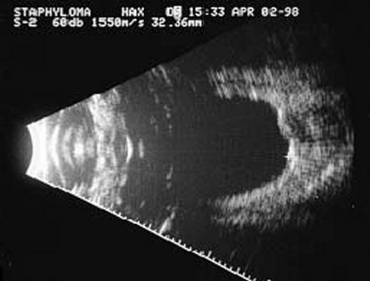

+ Giãn phình (giác mạc, củng mạc)
- Anterior Staphyloma: giãn phình phần trước mắt
- Posterior Staphyloma: giãn phình phần sau nhãn cầu
Đáy mắt có hình ảnh giãn phình phía sau

Hình ảnh giãn phình củng mạc qua siêu âm B
- Corneal Staphyloma: phòi mắt cua
- Một khối gồm giác mạc và màng bồ đào
- Mống mắt phòi ra tạo thành khối qua vết thương giác mạc
- Scleral Staphyloma: giãn phình cũng mạc thường do viêm